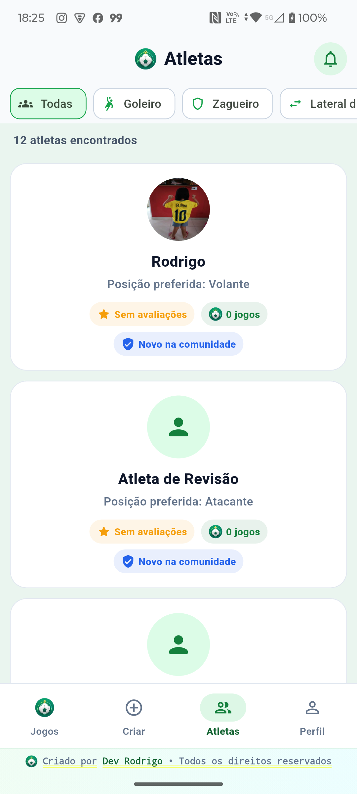

Aplicativo mobile · Produto real
PlayMatch
Uma experiência mobile para encontrar jogos próximos, organizar partidas e construir confiança entre atletas — da descoberta ao apito final.

O problema
Organizar uma partida exige ferramentas que normalmente ficam espalhadas.
Descoberta difícil
Atletas precisam localizar jogos compatíveis com distância, horário e posição.
Confirmações frágeis
Vagas, desistências e candidaturas precisam permanecer consistentes com acessos simultâneos.
Privacidade do local
O endereço completo deve ser liberado somente depois que a participação for aceita.
Confiança
Avaliações, denúncias e moderação ajudam a criar uma comunidade responsável.
Decisões técnicas
Experiência simples na tela, regras rigorosas por trás.
Flutter reutilizável
- Interface responsiva
- Identidade visual consistente
- Fluxos modularizados
Firebase seguro
- Authentication por e-mail e Google
- Firestore com regras de acesso
- Storage validando proprietário e arquivo
Operações críticas
- Transações e Cloud Functions
- Contagens atômicas de vagas
- App Check e Play Integrity
Recursos nativos
- Google Maps, GPS e rotas
- Câmera e galeria
- Notificações push segmentadas
Arquitetura
Fluxo mobile conectado a serviços gerenciados.
Desafios e testes
Correções guiadas por uso real, logs e regressões observadas.
Desafios
- Diferenças entre debug e release no Maps
- Upload direto da câmera
- Concorrência em vagas
- Permissões e índices do Firestore
Validação
- Emulador e Motorola real
- Crashlytics e logs
- Testes de fluxos de partida
- APK debug e release
Resultados
Um produto funcional que cobre o ciclo completo de uma partida.
Aplicativo instalado e validado em dispositivo Android físico.
Criação, candidatura, confirmação, sala, localização, avaliação e moderação.
Testes, Crashlytics, App Check e operações transacionais.
Interface
Principais áreas do aplicativo.


Conheça a engenharia por trás.
Continue pelo backend Java que protege regras de partidas e usuários.